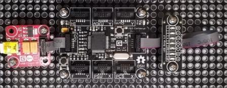

Version: 0.9.0
LedStrip is connected as followed on Cerberus:

| LedStrip | Mainboard |
|---|---|
| Socket Type Y | Socket 4 |
using System.Threading;
using Bauland.Gadgeteer;
using GHIElectronics.TinyCLR.Pins;
namespace Test_LedStrip
{
static class Program
{
static void Main()
{
// LedStrip connected on Socket 4 (Type Y) of FEZ Cerberus mainboard.
LedStrip ledStrip = new LedStrip(FEZCerberus.GpioPin.Socket4.Pin3, FEZCerberus.GpioPin.Socket4.Pin4, FEZCerberus.GpioPin.Socket4.Pin5, FEZCerberus.GpioPin.Socket4.Pin6, FEZCerberus.GpioPin.Socket4.Pin7, FEZCerberus.GpioPin.Socket4.Pin8, FEZCerberus.GpioPin.Socket4.Pin9);
while (true)
{
// Set individual state of led
for (int i = 0; i < 7; i++)
{
if (i == 0)
{
ledStrip.SetLed(6, false);
ledStrip.SetLed(i, true);
}
else
{
ledStrip.SetLed(i - 1, false);
ledStrip.SetLed(i, true);
}
Thread.Sleep(500);
}
// Set group state of led
for (int i = 0; i < 7; i++)
{
ledStrip.SetToLed(i);
Thread.Sleep(500);
}
}
}
}
}